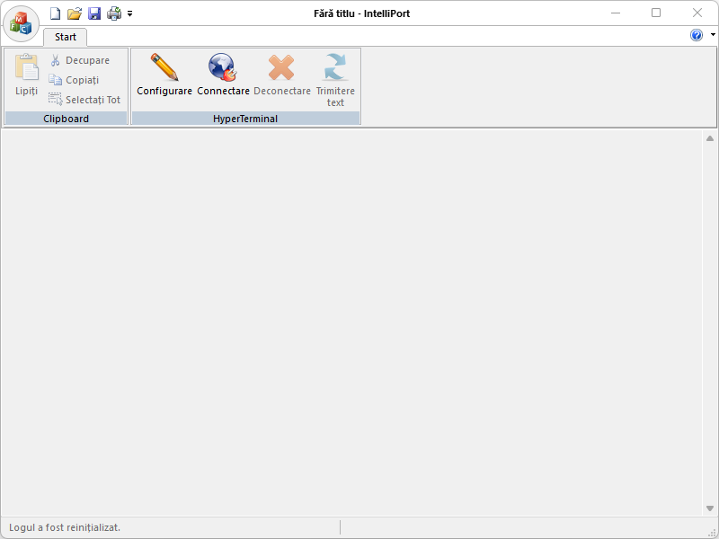

IntelliPort is a free (as in “free speech” and also as in “free beer”) serial port / socket logger. Running in the Microsoft Windows environment, its use is governed by GNU General Public License v3.0. IntelliPort is written in C++ and uses pure Win32 API and STL which ensures a higher execution speed and smaller program size. By optimizing as many routines as possible without losing user friendliness, IntelliPort is trying to reduce the world carbon dioxide emissions. When using less CPU power, the PC can throttle down and reduce power consumption, resulting in a greener environment. I hope you enjoy IntelliPort as much as I enjoy coding it!
IntelliPort is a program that you can use to connect to other computers, using either your null modem cable or Ethernet connection. IntelliPort records the messages passed to and from the computer on the other end of your connection. Therefore, it can serve as a valuable troubleshooting tool when setting up and using your modem. To make sure that your modem is connected properly or to view your modem’s settings, you can send commands through IntelliPort and check the results. IntelliPort has scroll functionality that allows you to look at received text that has scrolled off the screen. You can use IntelliPort to transfer large files from a computer onto your portable computer using a serial port rather than going through the process of setting up your portable computer on a network. IntelliPort is designed to be an easy-to-use tool and is not meant to replace other full-feature tools available on the market. You can use IntelliPort to perform the specific tasks described above, but do not attempt to use IntelliPort for more complex communication needs.
The installer will likely require Administrative privileges in order to install IntelliPort (and later, to update IntelliPort or install or update plugins, or anything else that requires writing to the installation directory). If you do not have Administrative privileges, you either need to tell the installer to use a location where you do have write permission (though that may still ask for Administrator privileges), or you may choose not use the installer and instead run a portable edition from a directory where you have write permission.
These instructions will allow you to run a portable or mini-portable (also called “minimalist”), without requiring administrative privileges.
The portable zip edition of IntelliPort can be removed by deleting the directory they came in. If you manually set up file associations or context-menu entries in the OS, it is your responsibility to remove them yourself.
A “file” is the basic unit of what is edited in IntelliPort, but that term actually covers multiple related concepts. Primarily, the “file” is the series of bytes stored on a disk or other storage medium and accessed through your computer’s filesystem; and pedantically, if the document you are editing has never been saved to the filesystem, it’s not technically a file, though common usage applies that term to unsaved documents as well. The “document” refers to the text being edited, whether it’s a new, unsaved document, or whether it’s a document that’s been previously saved as a file on the filesystem. And finally, in IntelliPort, each document is presented in a Tab in one of the two Views of the IntelliPort user interface, which are the graphical containers which IntelliPort uses to manipulate files and other documents, though many users think of the user interface element as the “file” as well.
The main button contains many of the normal file-operation actions found in most applications. IntelliPort also includes other custom actions which are useful to understand.
The Clipboard menu features typical editing commands which any Windows user should be familiar with:
The HyperTerminal menu features the application's most important functions:
As noted in the Contributing Rules for IntelliPort, all Pull Requests need to be attached to a issue on GitHub. So the first step is to create an issue which requests that the functionality be improved (if it was already there) or added (if it was not yet there); in your issue, be sure to explain that you have the functionality definition ready, and will be submitting a Pull Request. The second step is to use the GitHub interface to create the Pull Request from your fork into the main repository. The final step is to wait for and respond to feedback from the developers as needed, until such time as your PR is accepted or rejected.